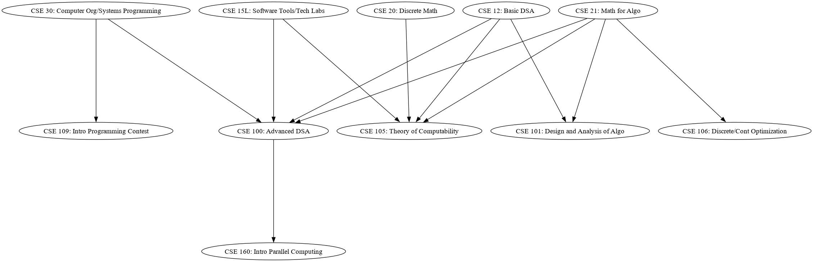

UCSD Undergraduate CSE Prerequisites
Note: blue arrows indicate "or" prereqs; any origin node will fulfill as a
prereq. Black arrows indicate required prereqs.
Please note that prereqs only take into account CSE courses. There may be
courses from other departments that are required and/or can be used as an
alternative prereq.
Jump to:
Lower Division Courses
Miscellaneous lower division courses:
- CSE 42: Building/Programming Electronic Device
- CSE 87: First-year Seminar
- CSE 90: Undergrad Seminar
- CSE 91: Perspective in CSE
- CSE 95: Tutor Apprenticeship
- CSE 99: Independent Study in CSE
Upper Division Courses
Graph of all upper division courses (warning: very large)Jump to:
Data Structures and Algorithms
Data Science and Artificial Intelligence
Software Engineering and Software Principles

Hardware Systems
Computer Graphics
Database Systems
Network Systems
Cybersecurity
Web Development
Social and Natural Sciences
Miscellaneous upper division courses:
- CSE 125: Software System Design/Implementation
- CSE 145: Embedded System Design Project
- CSE 175: Entrpreneurship for Engineers
- CSE 176E: Robot Systems Design/Implementation
- CSE 180: Biology Meets Computing
- CSE 190: Topics in CSE
- CSE 191: Seminar in CSE
- CSE 192: Senior Seminar in CSE
- CSE 193: Intro CS Research
- CSE 195: Teaching
- CSE 197: Field Study in CSE
- CSE 197C: Cooperative Practicum in CSE
- CSE 198: Directed Group Study
- CSE 199: Independent Study for Undergrad